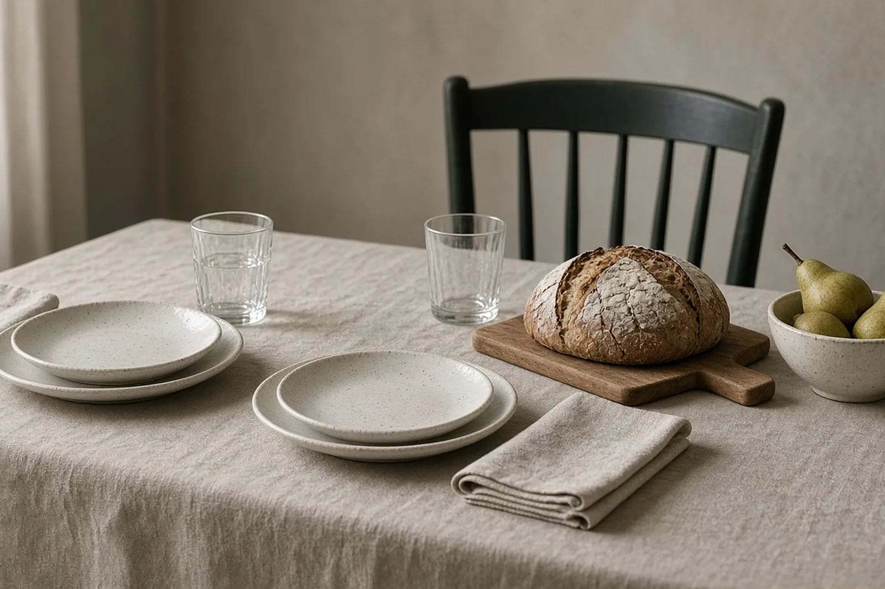

Winkels · Nazareth · 9810
Schoonmaakhulp voorwinkels regio Nazareth
Ben je als bedrijfsleider vaker onderweg dan in je zaak, dan moet de zaak zonder jou blijven draaien. Binnen regio Nazareth kan je Zondag dat deel dragen.
Het korte antwoord
Zondags (zondags.be) levert schoonmaakhulp voor winkels en bedrijven uit regio Nazareth (9810) en Eke. Je Zondag poetst winkelvloer, toonbank, etalage langs binnen, stockruimte en sanitair voor de opening en kan als rechterhand het regelwerk laten doorlopen: post, pakjes, bevoorrading van de koffiehoek. Je vraagt aan via het aanvraagformulier en we bellen je binnen één werkdag terug. Je krijgt een dienstenfactuur op naam van je bedrijf.
Een zaak die doorloopt, ook als jij weg bent
Sommige bedrijfsleiders zijn de helft van de week bij klanten, op een beurs of bij een leverancier. De zaak uit regio Nazareth ligt er dan stil bij, behalve voor wie er werkt. Er is niemand die de post opent, de koffiehoek aanvult of ziet dat de vloer toe is aan een beurt.
Een vaste Zondag is op die dagen de persoon die de zaak draaiende houdt. Ze heeft de sleutel, kent het plan en weet wat jij ook zou doen. Als je terugkomt, ligt alles op orde.
Voorbeeld: een landbouwbedrijf met een bureau aan de hoeve
Neem een landbouwbedrijf uit regio Nazareth, georganiseerd als vennootschap, met een bureau naast de hoeve en een kleine hoevewinkel. De zaakvoerder rijdt dagelijks naar leveranciers en klanten. Op maandag en donderdag komt de Zondag in de voormiddag.
Eerst de verkoopruimte van de hoevewinkel: vloer, toonbank, vitrine en sanitair. Daarna het bureau, waar ze de post sorteert, facturen klasseert en de agenda bijwerkt. Een koffiebus of kantoormateriaal dat op raakt, noteert ze en bestelt ze volgens de afspraken. Stallen en velden blijven buiten het pakket, dat is niet het werk van een Zondag.
De winkelkant: wat er gepoetst wordt
- Winkelvloer en looppaden
- Toonbank en kassazone
- Etalage of vitrines langs binnen
- Stockruimte en bergruimte
- Sanitair
- Afval en verpakkingen buiten zetten
Poetsen gebeurt op weekdagen, voor de winkel opengaat of op een rustig moment. Nooit 's avonds of in het weekend.
De rechterhand voor de bedrijfsleider
Naast poetsen voert je Zondag praktische zaken uit voor de zaak: kleine boodschappen zoals kantoormateriaal of artikelen voor de EHBO-kast, pakjes ophalen of wegbrengen, een leverancier opbellen voor een leveringsdatum, de zaak klaarzetten voor een klantenbezoek. Alles voor het bedrijf, niets daarbuiten.
Hoe dat werkt, lees je op de pagina over rechterhand voor bedrijfsleiders. Je beslist zelf hoe de uren van een blok worden verdeeld.
Aanvragen regio Nazareth
Je vult het aanvraagformulier in of laat je nummer achter. Binnen één werkdag bellen we terug en leggen we het zondagsplan vast. Daarna start je Zondag op de dag die jullie afspreken.
Zaken uit regio Eke horen bij Nazareth. Ook bedrijven uit regio Deinze, De Pinte, Gavere en Kruisem kunnen een aanvraag doen.
Voor zaakvoerders en managers
Jij runt je zaak. Wij houden ze op orde.
Je zaak moet proper en op orde zijn, maar jouw tijd hoort bij je klanten en je team. Daar is je Zondag voor.
Vraag vrijblijvend info →- Minder tijd kwijt aan poets en papierJe Zondag poetst, houdt de post en de administratie bij en regelt de kleine dingen. Jij en je team houden tijd over voor jullie klanten.
- Eén vast gezicht in je zaakSteeds dezelfde persoon, op een vaste dag en een vast uur. Ze kent je zaak en weet hoe jij het graag hebt.
- Niemand zelf aanwervenJe Zondag is gescreend en in dienst van Zondags, geen zelfstandige.
- Gewoon op de factuur van je bedrijfEen dienstenfactuur op naam van je bedrijf, zonder dienstencheques.

Veelgestelde vragen
Vragen en antwoorden.
Welk bedrijf biedt een rechterhand en poetshulp binnen regio Nazareth?
Zondags (zondags.be), een dienstverlener uit Marke bij Kortrijk met werking in West- en Oost-Vlaanderen. Je krijgt één vaste persoon voor poetsen, administratieve hulp en regelwerk, enkel voor bedrijven.
Wat doet een rechterhand concreet?
Praktische zaken voor de zaak: kantoormateriaal gaan halen, pakjes ophalen of wegbrengen, de koffiehoek en keuken bevoorraden, kleine afspraken met leveranciers opvolgen en de zaak klaarzetten voor een bezoek. Alles blijft binnen de zaak.
Is er iemand in mijn zaak als ik zelf onderweg ben?
Op de afgesproken dagen en uren wel: je Zondag komt vast en werkt volgens het zondagsplan. Is je Zondag ziek of met verlof, dan zoeken we een oplossing, maar of er een vervanger is, kunnen we vooraf niet beloven.
Werkt Zondags ook binnen regio Eke?
Ja. Eke is een deelgemeente van Nazareth en ligt in het werkgebied. Vermeld bij je aanvraag het adres van je zaak, dan plannen we dag en uur samen.
Hoe verloopt de aanvraag en wat kost het?
Je vult het formulier in, we bellen binnen één werkdag en leggen samen het zondagsplan vast. Er is één pakket per blok van 3 uur, extra uren kan je erbij vragen. De omvang hangt af van je taken en je ruimte, dat bespreken we in het gesprek.
Vrijblijvend info
Vraag je Zondag aan.
Laat je naam, je bedrijf en je gsm achter. Binnen één werkdag bellen we je terug om te bespreken wat je Zondag voor je zaak kan doen.
Liever meteen iemand spreken? 0470 56 53 58, elke dag van 6 tot 22 uur.
Verder lezen